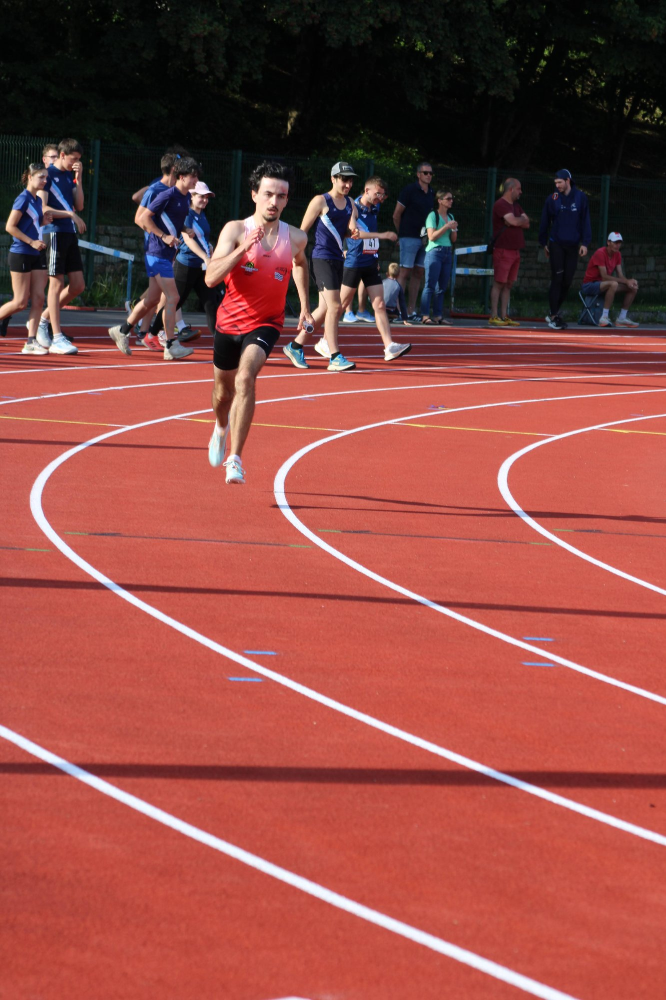

// Étudiant · ENSIBS Lorient
Futur spécialiste en cyberdéfense, passionné d'informatique et d'athlétisme.
Découvrir mon parcoursÉtudiant en première année de Parcours École Ingénieur (PEI-A) à l'ENSIBS de Lorient, je suis une formation alliant une licence SNIO et des enseignements renforcés par l'école de l'ENSIBS.
Passionné par la cybersécurité, j'aspire à intégrer le domaine de la cyberdéfense au sein de l'armée. Curieux et rigoureux, je développe mes compétences en programmation tout en m'investissant dans la compétition sportive.
| Langages | Python, C |
| Outils | Word, Excel |
| Cybersécurité | Notions — CTF |
| Langues | Anglais B2 (Evalang) |
| Certifications | Permis B · PSC1 |
Réalisation d'un site web personnel en HTML, CSS et JavaScript dans le cadre du module Web de la formation PEI-A. Objectif : présenter son parcours de façon interactive.
Participation au NBCTF, une compétition de cybersécurité de type Capture The Flag, en Première et en Terminale. Mise en pratique de notions de sécurité informatique : analyse de vulnérabilités et résolution de challenges techniques.
En dehors de l'informatique, je suis un athlète investi, spécialisé dans le sprint (60m au 400m) et pratiquant le demi-fond sur 5 km. Compétiteur depuis 4 ans au sein du club ACRLP Pontivy, je concours à un niveau régional.
Découvrir mon parcours sportif →
N'hésitez pas à me contacter.